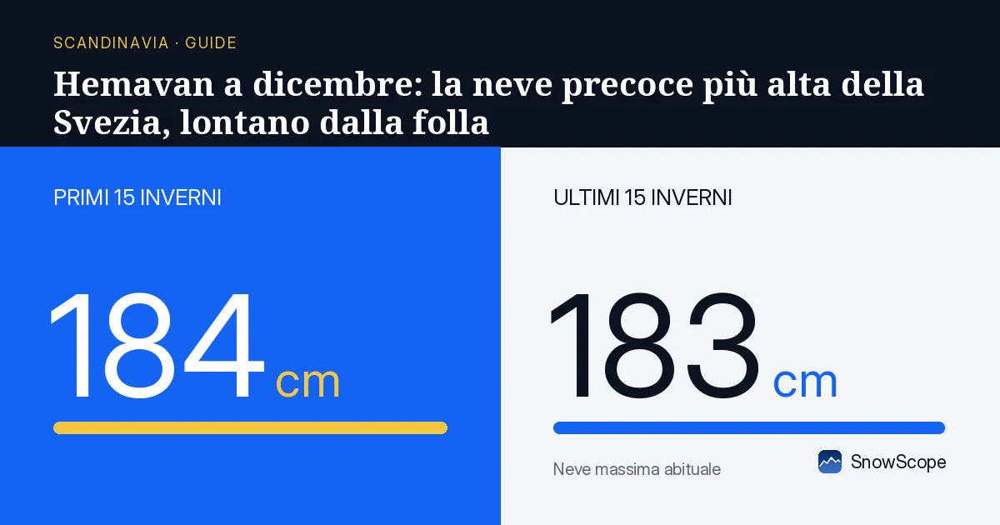

Hemavan a dicembre: la neve precoce più alta della Svezia, lontano dalla folla
In due righe: Hemavan, sulle montagne svedesi vicino al confine norvegese, ha la neve di dicembre più alta di tutte le località nordiche che abbiamo confrontato. In un tipico 15 dicembre i nostri 46 inverni di storico danno 82 cm a metà montagna (799 m), e ognuno di quegli inverni aveva lì almeno 30 cm nella settimana dal 15 al 21 dicembre.
Le previsioni neve in tempo reale per Hemavan nell'app SnowScopeAltezza neve, allerte powder e mappa 3D, gratis.
Il verdetto
Se per voi un dicembre economico vuol dire 'nessun rischio neve, poca gente, paese semplice', Hemavan fa al caso vostro. Non è grande: 37 km di piste mappate e 9 impianti tra 462 m e 1136 m. È molto a nord e lontano dalle grandi città, e questo lo tiene tranquillo prima di Natale.
Il prezzo di questa calma sono il viaggio e giornate cortissime. Il prezzo dello skipass non possiamo darlo: la pagina ufficiale del gestore che abbiamo controllato mostra le tariffe di un'altra area, quindi non ne citiamo.


Dicembre, settimana per settimana
La metà montagna aveva almeno 30 cm nel 98 % degli inverni già dall'1 al 7 dicembre, e in tutti gli inverni dall'8 in poi. In vetta, ogni inverno in ogni settimana di dicembre. Solo la base (462 m) è debole all'inizio: 78 % nella prima settimana, poi 89 % e 91 %.
L'altezza è l'altra storia. A Natale il 96 % dei nostri inverni aveva 60 cm o più a metà montagna, e un tipico 24 dicembre dà 62 cm alla base, 93 cm a metà montagna e 128 cm in vetta.
Come acqua immagazzinata, dicembre si è mosso poco
Un manto così alto a dicembre è una grande riserva d'acqua invernale che qui di solito dura fino alla primavera: il mese più nevoso a metà montagna è aprile. La tendenza è lieve. La media di dicembre a metà montagna è passata da 89 cm nei primi 15 inverni a 81 cm negli ultimi 15, e ogni settimana di Natale degli ultimi 15 inverni aveva ancora lì 30 cm.
L'inverno scorso, mentre molte località erano a secco, Hemavan aveva 88 cm a metà montagna il 15 dicembre.
Accanto ad Åre
Åre è il nome famoso, con molto più sci (116 km di piste mappate). A dicembre il manto è più sottile: 40 cm a metà montagna in un tipico 15 dicembre e l'89 % degli inverni con 30 cm nella settimana dal 15 al 21 dicembre. Entrambe vendono skipass a prezzi dinamici, e per nessuna delle due abbiamo letto un importo fisso sulla pagina ufficiale.
La scelta è quindi tra dimensioni e certezza: Åre per varietà e vita di paese, Hemavan per la neve più sicura e più alta del mese.
Per chi è
Per chi vuole neve naturale alta prima di Natale e non ha bisogno di un grande comprensorio: scialpinisti, famiglie che amano la calma e chiunque sia rimasto deluso da un dicembre verde nelle Alpi. Portate pazienza per il viaggio ed entusiasmo per le giornate corte.
Consigli per sciatori
- Ogni settimana di dicembre va bene a metà montagna; la base è più sicura dall'8 dicembre.
- Prima di prenotare controllate i prezzi ufficiali dello skipass per le vostre date; noi non abbiamo potuto confermare un importo.
- Organizzate il viaggio presto: il nord della Svezia ha pochi voli e trasferimenti lunghi d'inverno.
- Neve alta = terreno valanghivo fuoripista: leggete la previsione valanghe svedese e portate l'attrezzatura giusta.
Altre mappe (siti esterni)
Riferimenti e crediti
- Hemavan: official lift-pass page of the operator (prices by date; no fixed price quoted), checked 13 November 2026 tarnabyalpint.se/en/book/lift-pass/price-list/
- Åre: official lift-pass page of the operator (prices by date; no fixed price quoted), checked 13 November 2026 www.skistar.com/en/winter/skipass/buy-skipass/lift-pass-are/
Su questi numeri
Numeri della neve: storico neve SnowScope, 46 inverni passati (1980-81 - 2025-26) alle quote della località, corretto per la quota (una stima per un'area, non i bollettini della località); "buona neve" = 30 cm o più al suolo in media nella settimana. Mappa: la nostra altezza abituale al 15 dicembre distribuita sul terreno secondo la quota. Piste e impianti: mappatura OpenSkiMap. Skipass: listini ufficiali delle località, verificati il 13 novembre 2026; i prezzi possono cambiare.
Bollettini valanghe ufficiali: Lavinprognoser (Naturvårdsverket)
Cita questo articolo
Per ricerca, didattica o stampa: numeri e grafici sono liberamente riutilizzabili con licenza CC BY 4.0 citando così.
SnowScope (2026), Hemavan a dicembre: la neve precoce più alta della Svezia, lontano dalla folla, https://snowscope.app/blog/it/2026/11/hemavan-december-skiing-lapland-deep-snow-budget.html, consultato il 2026-11-14
SnowScope (Atlas Labs). (2026, November 14). Hemavan a dicembre: la neve precoce più alta della Svezia, lontano dalla folla. SnowScope snow reports. https://snowscope.app/blog/it/2026/11/hemavan-december-skiing-lapland-deep-snow-budget.html
BibTeX
@misc{snowscope2026hemavandecemberskiinglap,
author = {{SnowScope (Atlas Labs)}},
title = {Hemavan a dicembre: la neve precoce più alta della Svezia, lontano dalla folla},
year = {2026},
month = nov,
howpublished = {\url{https://snowscope.app/blog/it/2026/11/hemavan-december-skiing-lapland-deep-snow-budget.html}},
note = {Published 2026-11-14 15:34 UTC; accessed 2026-11-14}
}· CC BY 4.0 · Metodi, dati e strumenti →
Hemavan: neve e temperatura per quota, quest'inverno vs lo scorso (strumenti) →
Segui Hemavan
Gratis: un messaggio quando arriva la neve e il meteo ogni mattina.